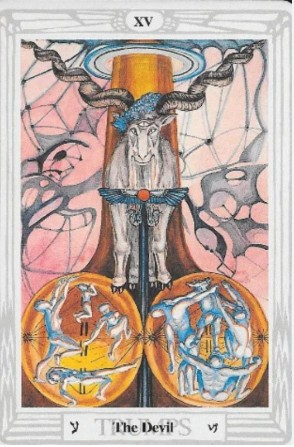

El Tarot de Thoth te trae el mensaje de El Diablo, una carta que representa la energía cruda, la pasión, la materialidad y el poder instintivo. 🔥
El Diablo simboliza la fuerza vital desatada, la creatividad, el deseo y la capacidad de manifestación en el mundo material.
Hoy es un día para conectar con tu energía interna. La intensidad puede ser canalizada para lograr tus objetivos.
Romper estructuras que te atan puede ser liberador. Evalúa lo que te controla y decide si quieres cambiarlo.
Esta carta puede indicar una fuerte atracción en lo amoroso o una oportunidad para influir en otros.
Las pasiones pueden intensificarse. Es un día para explorar la conexión y el deseo en tus relaciones.
Tu ambición está en su punto más alto. Usa esta energía para impulsar proyectos con determinación.
Cuidado con la impulsividad financiera. La carta sugiere poder adquisitivo, pero también tentaciones.
Atiende tu bienestar emocional y físico. La autoexploración puede ayudarte a reconocer patrones.
"Acepto mi sombra y mi luz.
La energía creativa fluye en mí y la uso con sabiduría.
Hoy reconozco mi poder interior."